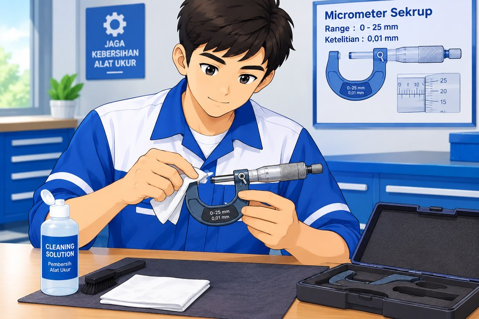
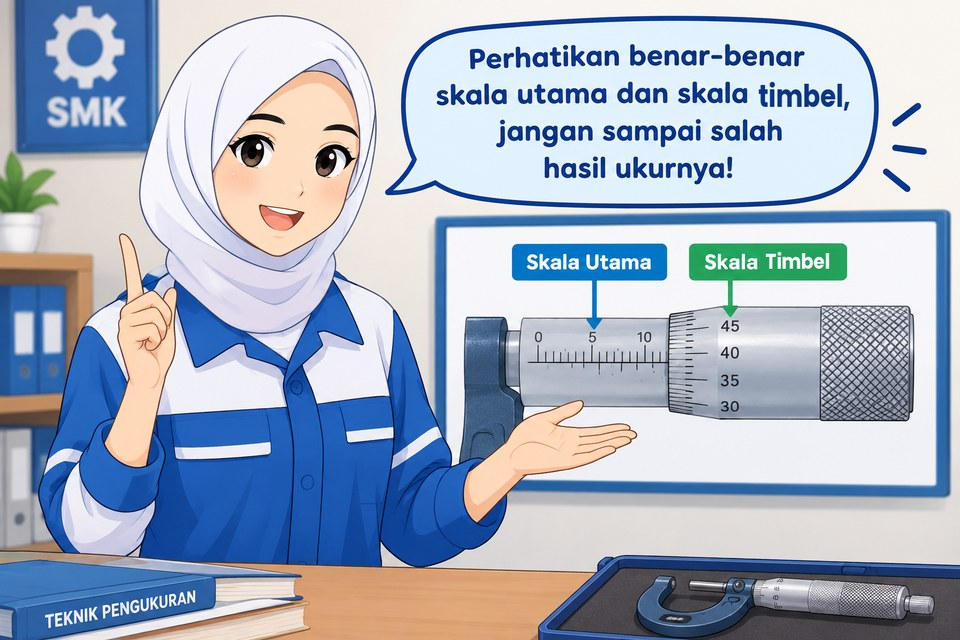

Daftar bagian (klik untuk melihat fungsinya)

Langkah-langkah mengukur
⚠️ Kesalahan nol
Tutup rahang dengan ratchet sampai berbunyi klik. Jika tidak terbaca 0,00 mm, catat sebagai kesalahan nol (positif jika di atas nol, negatif jika di bawah nol).
Hasil sebenarnya = pembacaan − kesalahan nol.
💡 Tips & kesalahan umum
- Selalu gunakan ratchet di akhir, jangan memutar thimble dengan keras.
- Pegang rangka dengan isolator, jangan terlalu lama agar suhu tidak memuai.
- Posisi mata tegak lurus skala agar tidak terjadi kesalahan paralaks.
- Waspada garis 0,5 mm di bawah garis datum: sudah tampak atau belum.
- Bersihkan permukaan ukur sebelum dan sesudah dipakai, simpan dengan rahang sedikit terbuka.
Mode baca memakai tampak depan tanpa distorsi perspektif. Garis biru = tepi thimble: baca skala utama pada garis terakhir di sebelah kirinya. Garis merah = perpanjangan garis datum: angka thimble yang segaris dengan garis merah adalah skala putar.
🔍 Perbesaran skala putar
Garis skala putar yang segaris dengan garis datum (merah) menunjukkan angka ketelitian 0,01 mm.
🧮 Perhitungan
Aturan: 1 putaran thimble = 0,5 mm (50 bagian × 0,01 mm). Hasil = skala utama (atas mm + bawah 0,5 mm) + skala putar × 0,01.
Skala utama: garis terakhir di kiri garis biru (tepi thimble). Skala putar: angka thimble yang segaris dengan garis merah.
Soal
Berapa hasil pengukuran yang ditunjukkan micrometer? (dalam mm)
🔍 Perbesaran skala putar
